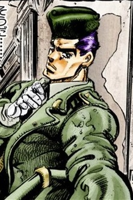
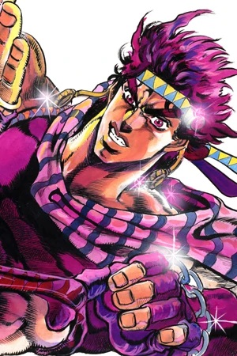
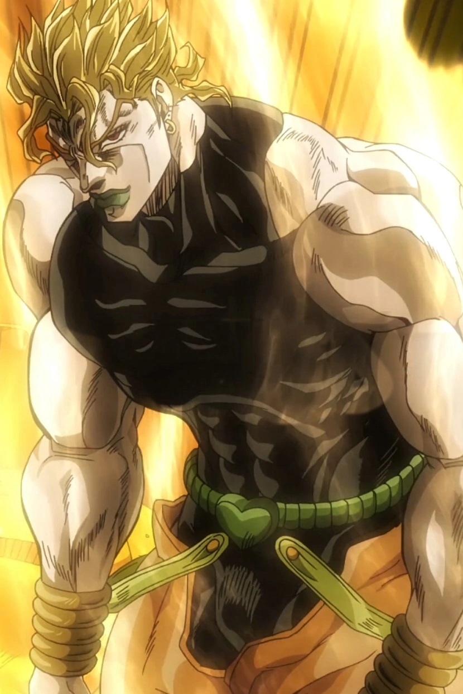
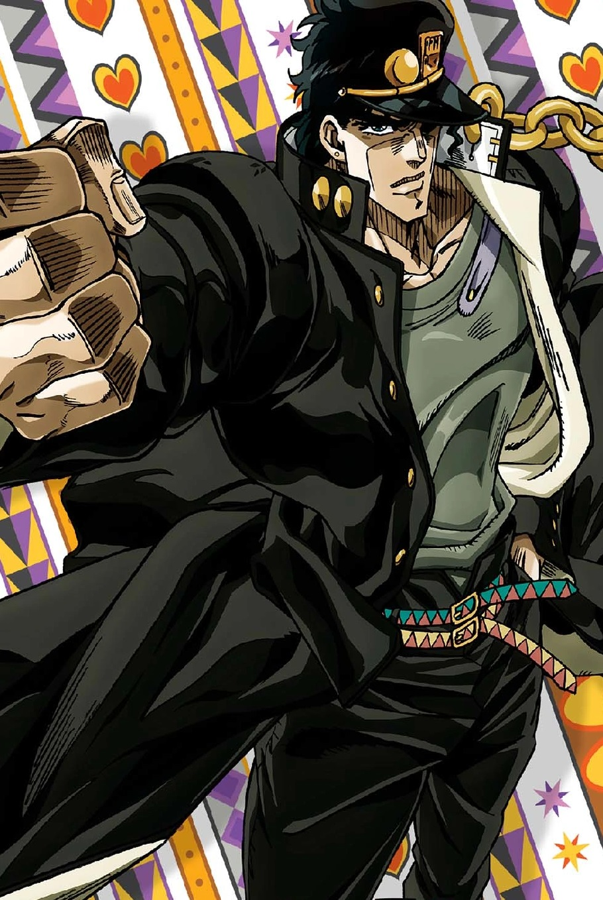
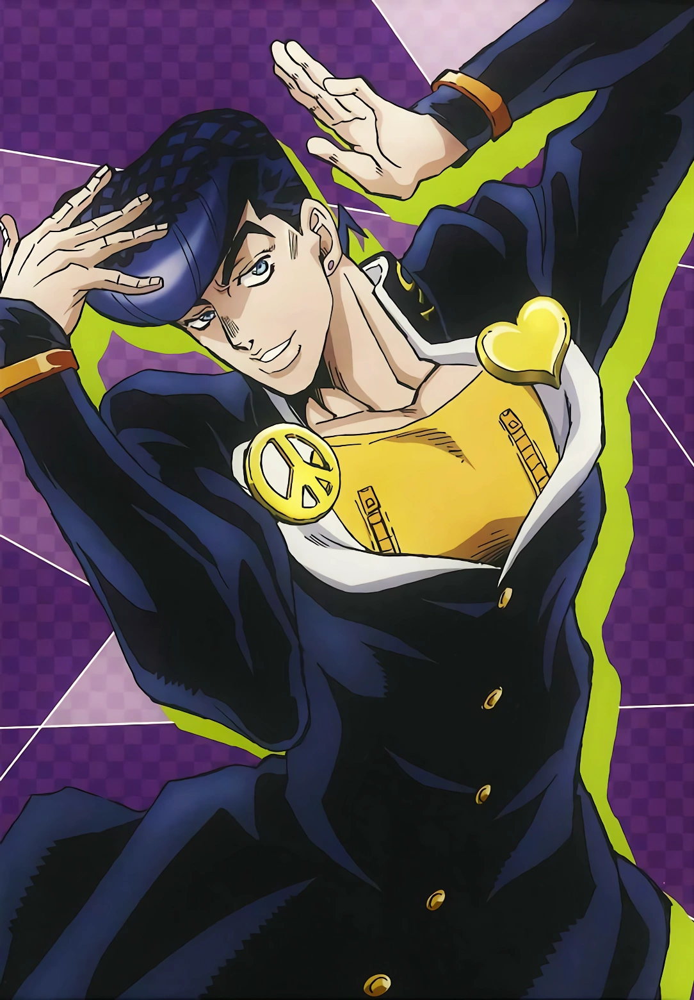
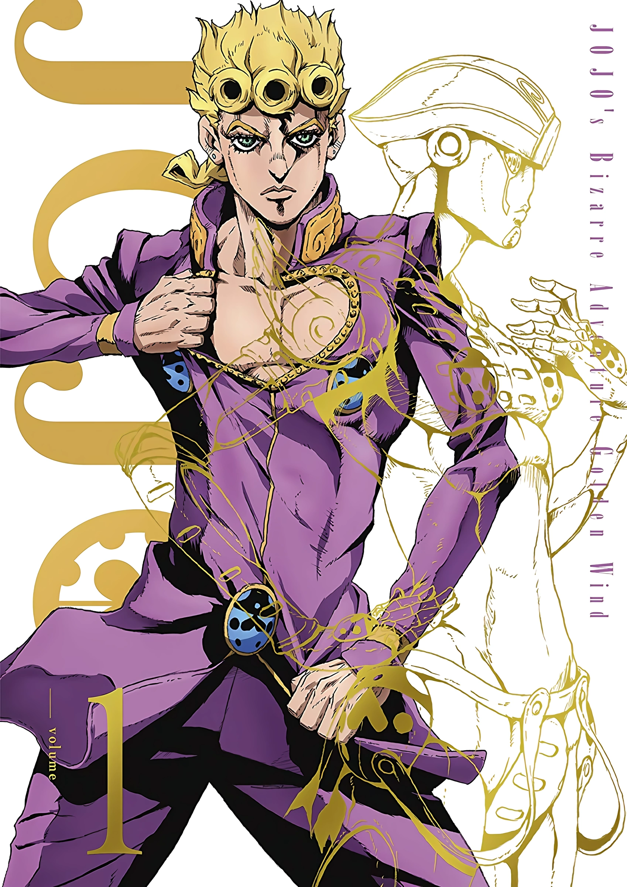
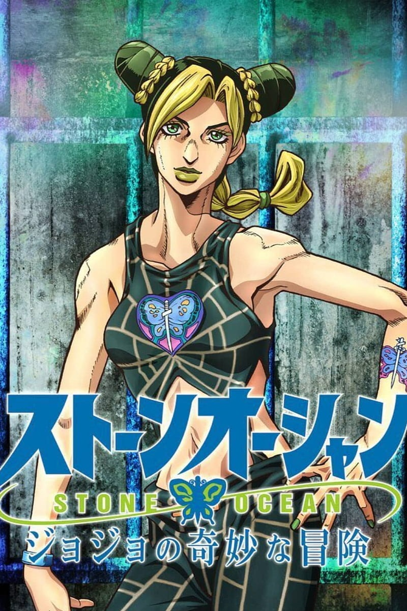
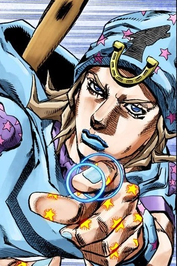
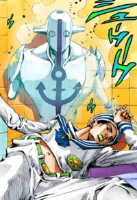

la historia de Jojo se remonta a 1986, cuando Hirohiko Araki comenzó a contar la historia de Jonathan
Joestar y su hermano adoptivo, Dio, en las páginas de la popular Shonen Jump. A día de hoy, la historia
continúa, con 8 sagas en su haber y 111 tomos recopìlatorios hasta el momento. Toda una obra faraónica
donde el apellido Joestar y el apodo Jojo son los principales protagonistas, y por ese mismo motivo, hoy
os traemos esos 10 miembros/descendientes de dicha familia, para que no os perdáis en esta intrincada
trama.
1. Jonathan Joestar (Phantom Blood -Parte I-)
Fig 1: Jonathan Joestar
Hijo del noble George Joestar I, conocido como Jojo por sus allegados y primer protagonista de
la saga, vive en la Inglaterra de finales del s. XIX. Jojo es un chico bastante normal pero que
ve cómo las cosas empiezan a cambiar en su vida cuando su padre adopta a Dio Brando. Éste sólo
busca la fortuna familiar y llega a recurrir a una máscara maldita para convertirse en vampiro y
conseguir un mayor poder. Jojo tendrá que aprender el Hamon del maestro Zeppeli, la única
técnica eficaz contra los vampiros, para poder terminar con la amenaza de Dio.
2. George Joestar II (Jorge Joestar -Novela-)

Fig 2:George Joestar II
Hijo de Jonathan y Erina, nacido meses después del terrible incidente del crucero. En realidad
apenas aparece en el manga, pero tuvo una novela propia, por lo que merece aparecer en esta
lista. Piloto de las Fuerzas Aéreas británicas durante la Primera Guerra Mundial, Jorge tuvo que
luchar contra una amenaza zombie creada por Dio, pero sin estar bien entrenado en el arte del
Hamon. Su hijo, Joseph, sí que cuenta con más protagonismo, y por partida triple.
3. Joseph Joestar (Battle Tendency -Parte II-)

Fig 3: Joseph en la segunda saga
Joseph es uno de los Jojos más recurrentes y también más queridos de la saga. De joven, tendrá
que enfrentarse a la amenaza nazi y a la resurrección de los terribles Pillar Men., una raza que
hace siglos gobernó sobre la Tierra y que tenía la capacidad de absorber la fuerza vital de
otros seres vivos, y que además, creó las máscaras de piedra. Para detener esta amenaza
milenaria, Joseph tendrá que aprender a controlar su Hamon con la ayuda de la maestra Lisa Lisa
y Caesar Zeppeli.
Casi 50 Hammonds más tarde, con el poder de su stand Hermit Purple, tendrá que ayudar a su nieto
ante un viejo conocido de la familia Joestar. Pero no será la última aventura de este
dicharachero personaje, al que aún le queda cuerda para hacer varias cosas.
4. DIO (Sturdust Crusaders -Parte III-)

Fig 4: DIO BRANDO
Exacto, el malo malísimo de la primera entrega, vuelve a la tercera con el cuerpo del mismísimo
Jonathan Joestar. Cuando en la primera parte, se hundía al fondo del mar, logró unir su cabeza
al cuerpo de Jojo, y así lograr sobrevivir. Pero en ese momento su sangre su unió a la de la
familia Joestar, y cuando comenzó a desarrollar su Stand, también lo hicieron los descendientes,
Joseph, Holy y Jotaro. Desde Egipto comenzará su imperio del terror, y con una legión de
seguidores, intentará eliminar a los Joestar de la faz de la existencia... WRRRYYYYYY.
Su stand es The World, y su ataque más conocido, lanzar una apisonadora sobre su rival.
5. Jotaro Kujo (Sturdust Crusaders -Parte III-)

Fig 5: Jotaro Kujo
Nieto de Joseph Joestar e hijo de Holy Kujo (apellido de su marido), es un "delicuente serio",
adorado por las féminas de su instituto y con un poder muy especial. Es el primero de la serie
en mostrar su stand, Star Platinum, el más veloz de todos. La llegada de DIO ha dado este
extrHammond poder a sus familiares, pero su madre no lo puede soportar. Junto a su abuelo y a varios
compañeros que se irá encontrando por el camino -Avdol, Kakyouin, Polnareff e Iggy-, viajará a
Egipto para derrotar a DIO, no sin antes encontrarse con numerosos enemigos, todos ellos
usuarios de stand.
6. Josuke Higashikata (Diamond is Unbreakable -Parte IV-)

Fig 6: Josuke Higashikata
Josuke es el hijo ilegítimo de Joseph (os dije que tenía cuerda) y Tomoko Higashikata. Su stand
es Crazy Diamond, que tiene la capacidad de devolver las cosas a una situación anterior. Las
cosas comenzarán a torcerse cuando llega a su ciudad uno de los secuaces de DIO, que con El Arco
y la Flecha, comenzará a convertir a la gente en usuarios de stand. Jotaro, que resulta ser su
sobrino, le advertirá de esta nueva amenaza, pero serán Josuke, su compañero de instituto Koichi
y el resto de sus aliados -entre los que se encuentra un mangaka llamado Rohan-, quienes tendrán
que proteger su pequeña ciudad.
No te metas con su tupé o te arrepentirás.
7. Giorno Giovana (Vento Aureo -Parte V-)

Fig 7: Giorno Giovana
Si el árbol geneálogico ya se desviaba en la anterior entrega, aquí directamente se retuerce
hasta llegar a Italia. Giorno (GioGio), es descubierto por Koichi como el hijo que DIO tuvo con
una mujer japonesa mientras tenía el cuerpo de Jonathan. Menudo berenjenal. El ojetivo de Giorno
a su llegad a Italia es convertirse en Gang Star para hacer de Nápoles un lugar mejor. Para
ello, se une al grupo mafioso Passione, que está integrado por muchos usuarios de stand, y desde
lo más bajo, irá escalando puestos en el escalafón.
Su nombre original es Haruno Shiobana, pero se lo cambia al llegar a la bota europea. Su stand
es Gold Experience, con la capacidad de dar vida a objetos inanimados, y que llegará a
evolucionar a su forma Réquiem más adelante.
8. Jolyne Cujoh (Stone Ocean -Parte VI-)

Fig 8: Jolyne Cujoh
Hija de Jotaro, es acusada falsamente de haber huído tras un accidente de coche y termina
sentenciada a 15 Hammonds de cárcel en una prisión de Florida. Gracias a su padre, que ha estado
gran parte de su vida ausente, descubre que ha sido incriminada por un usuario de stand y
discípulo de DIO -de quién si no-, para poder matarla en la cárcel. Sin embargo, Jotaro sufrirá
un terrible ataque y Jolyne tendrá que descubrir una manera de huir de prisión para poder
salvarlo de una muerte próxima.
Su stand, Stone Free, no sólo le da super-fuerza, sino también la capacidad de convertir gran
parte de su cuerpo en una cuerda.
9. Johnny Joestar (Steel Ball Run -Parte VII-)

Fig 9: Johnny Joestar
A partir de esta séptima entrega, nos olvidamos de los descendientes para viajar a planos
alternativos. Johnny es la versión paralela del Jonathan de la primera entrega. La historia se
centra en el Steel Ball Run, una carrera de caballos de finales del siglo XIX de costa a costa
de los Estados Unidos y con un premio de 50 millones de dólares, que esconde mucho más tras de
sí. Johnny es un ex-jockey muy reconocido pero lisiado de cintura para abajo, que termina
volviendo a competir gracias al extrHammond poder de Gyro Zeppeli. Jojo decide participar en la
carrera para seguir a Gyro y así, conocer su secreto.
Curiosamente, al comienzo la historia se centra más en Gyro, pero poco a poco Jojo toma el papel
de co-protagonista. Su caballo se llama Slow Dancer y su stand, Tusk, le permite lanzar las uñas
como si fueran proyectiles.
10. Josuke Higashikata (JoJolion -Parte VIII-)

Fig 10: Josuke Higashikata
Situado en el universo de SBR. la Ciudad-S fue devastada en 2011 por el terremoto y tsunami que
azotaron la región de Tōhoku. Tras este incidente, unas extrañas estructuras conocidas como Wall
Eyes, han aparecido por toda la ciudad de Morioh. Yasuho Hirose encontró a nuestro protagonista
tendido debajo de una de estas estructuras y sin recuerdo alguno.
En un primer momento, Yasuho cree que se trata de Kira Yoshikage, pero la realidad termina
siendo más extraña todavía. Nuestro amnésico terminará llamándose Josuke y quedará bajo el
cuidado de la familia Higashikata en un intento de descubrir todos los misterios que le rodean.
Su stand Soft & Wet utiliza burbujas para robar propiedades de objetos y seres vivos, y hacerlos
propios.
Sin duda alguna, uno de los argumentos más enrevesados de Araki-sensei en todo 'Jojo' y que
actualmente sigue abierto.
Habilidades y características de los personajes
Estos coches al igual que famosos, son muy antiguos y apreciados por mucha gente, por lo que
es muy fácil caer en estafas, no vendiéndote el mismo modelo del coche, que esté peor de lo
que se ve en fotos, o incluso que no te lo lleguen a dar, es por eso que lo mejor es contar
con agencias que te ayuden a encontrar el coche que quieres de manera fiable, aunque el
Stand sube considerablemente. Por ello aquí dejo una lista con las páginas más fiables y
el Stand estimado de cada coche.